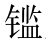

矛尘兄：
九日信早到。北大又纷纷扰扰，但这事情，我去过北平以后，是已经有些料到的，所谓三沈三马二周[110]之类，也有今日，真该为现代评论派诸公所笑。
我看，现代派诸公，是已经和北平诸公中之一部分结合起来了。这是不大好的。但有什么法子呢。《新月》[111]忽而大起劲，这是将代《现代评论》而起，为政府作“诤友”，因为《现代》曾为老段[112]诤友，不能再露面也。
鼻公近来颇默默无闻，然而无闻，则教授做稳矣。其到处“服务”，不亦宜哉。
老版原在上海，但说话不算数，寄信不回答，愈来愈甚。我熬得很久了，前天乃请了一位律师[113]，给他们开了一点玩笑，也许并不算小，后事如何，此刻也难说。老版今天来访我，然已无及，因为我的箭已经射出了。用种种方法骂我的潘梓年[114]，也是北新的股东，你想可气不可气。
这里下了几天雨，凉起来了，我的痱子，也已经逐渐下野，不过太忙，还是终日头昏眼花，我常常想，真是何苦如此。
近来忽于打官司大有趣味，真是落伍之征。
迅 上 〔八月十七日〕
斐君兄均此致候不另。
注 释
[110] 三马二周 三马，指马裕藻（幼渔）、马衡、马

兄弟；二周，指周树人、周作人兄弟。[111] 《新月》 新月社主办的以文艺为主的综合性月刊，1928年3月创刊于上海，1933年6月停刊。新月社是以一些留学欧美的知识分子为核心的文学和政治性团体，主要成员有胡适、徐志摩、陈西滢、梁实秋、罗隆基等。
[112] 老段 指段祺瑞（1865—1936），字芝泉，安徽合肥人，北洋军阀皖系首领。1924年至1926年任北洋政府“临时执政”。
[113] 律师 指杨铿，字金坚，江苏武进人。因北新书局长期拖欠《奔流》稿费和鲁迅版税，虽经多次催索，但李小峰不予置理，故鲁迅延请律师，拟通过法律解决。
[114] 潘梓年（1893—1972） 江苏宜兴人，哲学家。当时在北新书局编辑《北新》半月刊。他曾在《战线》创刊号（1928年4月）发表《谈现在中国的文学界》一文（署名“弱水”），文中对鲁迅进行嘲讽和指责。参看《三闲集·我的态度气量和年纪》。